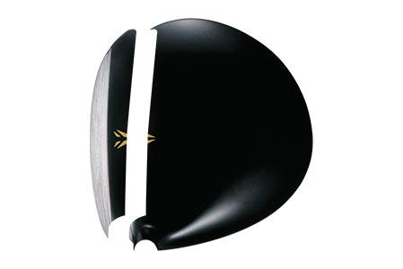
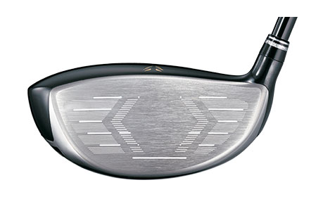
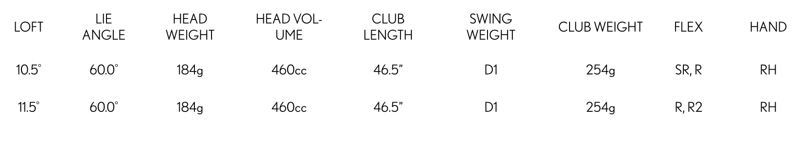

XXIO Prime Driver
Designed to help you achieve a straight ball flight with enhanced distance, the XXIO Prime Driver provides luxury performance crafted exclusively for your moderate swing speed.
TECHNOLOGY
Super-Tix PLUS Forged Titanium Cup Face
Forged from Super-Tix PLUS Titanium, a lightweight yet high-strength alloy, this new Cup Face greatly increases distance performance thanks to a hotter sweet spot that’s 103% larger than the previous model’s.

Unprecedented Lightweight Construction
The new XXIO Prime SP-1000 Shaft, with TORAYCA T1100G carbon fiber and NANOALLOY resin, is extremely lightweight to help produce more ball speed and distance due to its smooth, easy-to-swing profile.
Groundbreaking Forgiveness
Featuring an expanded toe and narrowed heel, a 6g weight that’s low and deep, and a lighter hosel repositioned closer to the center of the face, the new XXIO Prime Driver is extremely forgiving off the tee.
XXIO Prime Driver Specs
XXIO Prime Driver PRICE
€ / CHF / SEK / £